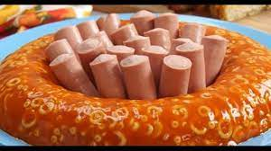

Human Food

Description
No less distrubing than the dog food or cat food I present human "food"
Ingridients
- 2 cans of Spaghetti-Os
- ¼ cup of water
- ¼ cup of condensed tomato soup
- 2 (¼ ounce) packets of unflavored gelatin
Steps
- Combine the water and tomato soup in a large saucepan on medium high heat.
- Gently stir as you mix in the gelatin. Continue stirring slowly for 5 minutes.
Continue stirring until there are no lumps of gelatin.
- Pour the mixture into your jello mold. Refrigerate for 4-5 hours at least.
- When you're ready to serve this, you can use warm water to loosen the cake from the mold.
This may not work as well if you're using a silicone mold, y
ou will need to make sure the water is really hot if you want it to get through the silicone.
- Enjoy! I kind of doubt anyone actually will, but I can always hope..
Return to main page